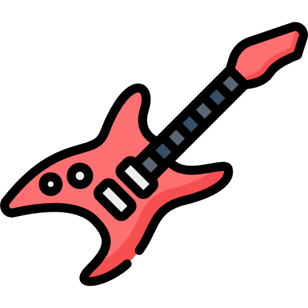
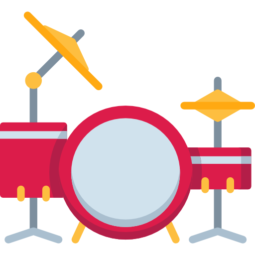

<style>
  :root {
    --ion-safe-area-top: 20px;
    --ion-safe-area-bottom: 22px;
  }
</style>

<ion-content fullscreen class="ion-padding" scroll-y="false">
  <ion-slides>
    <ion-slide>
      <div class="slide">
        
        <ion-label>
          <h1>Hoşgeldin</h1>
          <p>
            BandMe uygulamasında çalabildiğin enstrümanları, sevdiğin müzik
            türlerini seçip seninle aynı zevke sahip başkalarıyla
            tanışabilirsin.
          </p>
          <ion-icon color="warning" name="arrow-forward"></ion-icon>
        </ion-label>
      </div>
    </ion-slide>

    <ion-slide>
      
      <ion-label>
        <h1>Neler Yapabilirsin?</h1>
        <p>
          Tanıştığın arkadaşlarınla istediğin tarz müzik grupları kurabilir, arkadaşlarınla paylaşımlar yapabilirsin.
        </p>
        <ion-icon color="warning" name="arrow-forward"></ion-icon>
      </ion-label>
    </ion-slide>

    <ion-slide>
      
      <ion-label>
        <h1>Haydi Başlayalım</h1>
        
        <ion-button color="warning" [routerLink]="['/', 'tabs', 'tab1']" fill="clear"
        >Devam Et <ion-icon slot="end" name="arrow-forward"></ion-icon
      ></ion-button>
      </ion-label>
    </ion-slide>

  </ion-slides>
</ion-content>

<style>
  ion-content {
    background-color: black;
  }

  ion-slides {
    height: 100%;
  }

  .swiper-slide {
    display: block;
  }

  .swiper-slide h1 {
    margin-top: 2.8rem;
  }

  b {
    font-weight: 500;
  }

  p {
    padding: 0 40px;
    font-size: 18px;
    line-height: 1.5;
    color: #00f829a9;
  }

  h1 {
    color: #00f829a9;
  }
</style>
